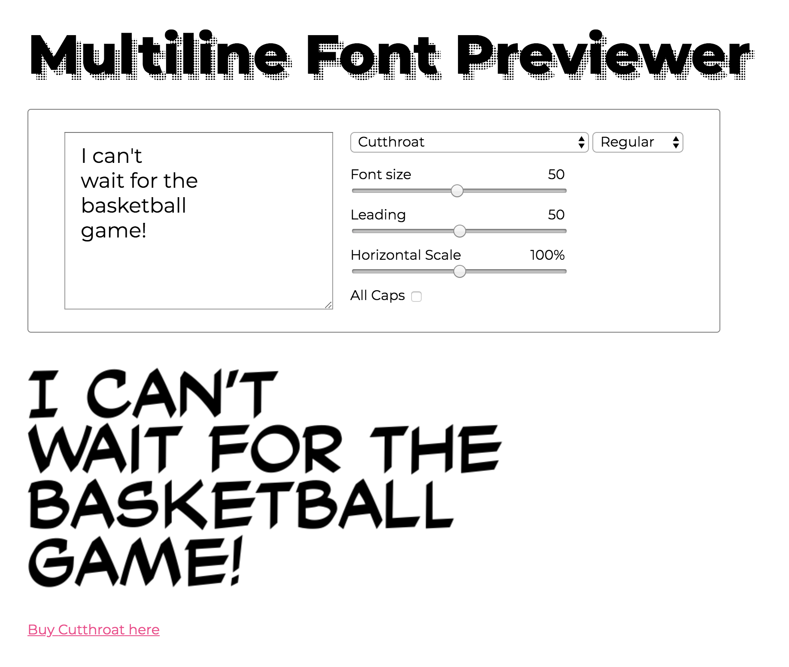
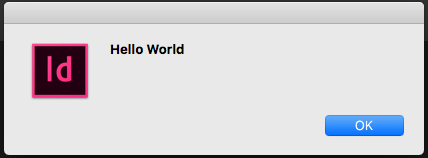
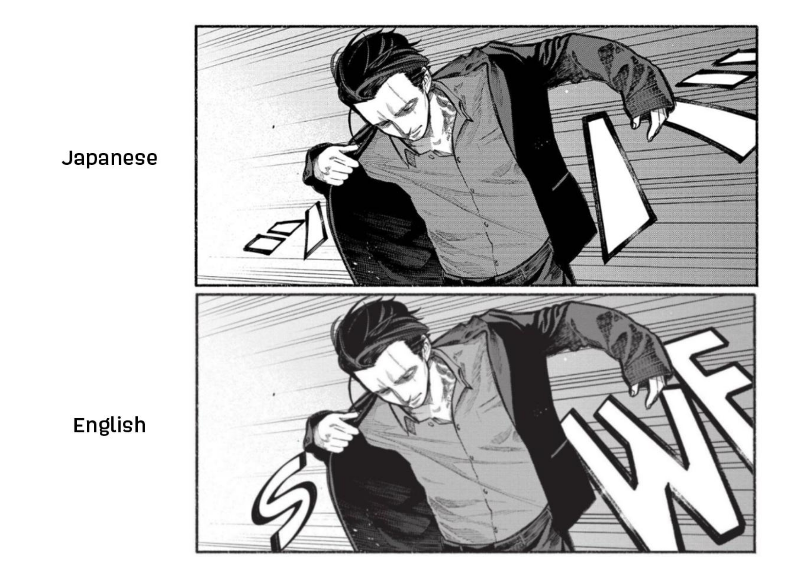

I built a font previewing app better tailored to letterers' needs, using vanilla JS and the MyFont API.

This tutorial will cover how set up the environment to start writing scripts to use in InDesign.
Macro Scenarios Widget
JavaScript - LESS - Handlebars
A part of the Credit Analytics suite, this widget gives the ability to calculate outcomes from financial models for multiple scenarios at once, as opposed to calculating each company separately. The user inputs various macroeconomic factors,
and this widget provides generated model output, industry and country benchmarks, and integration with the LSM model.
The user has the ability to provide an infinite amount of scenarios, compared against a control (left) and weighted average (far right). There are arrows to shift left and right between scenarios, and the dots at the bottom indicate to the
user where they are.
All of the Highcharts graphs are synchronized by legend filtering and relative bar heights, and they aren't rendered until they are visible on the page. The first point is accomplished by calculating the relative maximum of all the data points
on load, and the second point by rendering indexes 0, 1, and 2, and waiting until the user clicks the right arrow to render graphs at indexes > 3.

This widget was built with ES6 (Babel), LESS, Handlebars. If I had more time I would've build this with CSS Grid instead of <table>, so that I could add better CSS animations as the user flips horizontally
through scenarios.
More info on Credit Analytics here
Minigames
JavaScript
See the Pen 21 - the game by Sara Linsley (@saraoswald) on CodePen.
Based on my favorite game from Elementary school, the goal is to combine all the numbers with arithmetic such that it evaluates to 21.
See the Pen boxy by Sara Linsley (@saraoswald) on CodePen.
Really simple and really satisfying
CSS Pixel Art
SCSS - Pug - JavaScript
I wrote a mixin that creates a CSS-based image, given an array of HEX codes, and created some forks to see what I could do with it.
See the Pen 8-bit Pika w SCSS loops by Sara Linsley (@saraoswald) on CodePen.
Click the arrows to see other Pikachu angles
See the Pen 8-bit Mew w SCSS loops by Sara Linsley (@saraoswald) on CodePen.
Mew, from Pokemon
CSS-only Character Animation
CSS - SCSS - HAML
Creating CSS animations is not only good practice -- it's real good fun.
See the Pen Bee by Sara Linsley (@saraoswald) on CodePen.
Bee, from Bee and Puppycat
See the Pen Tiki by Sara Linsley (@saraoswald) on CodePen.
My rescue puppy, Tiki
See the Pen Single-element animated cassette by Sara Linsley (@saraoswald) on CodePen.
Cassette using a single HTML element with a million "gradients" plastered on top of it
Explore more here
Computer Vision w/ Trees
Python - OpenCV - MatPlotLib
Using the computer vision library OpenCV, we developed a method for reliabily detecting tree-like structures from images using SIFT feature detection and brute force matching.

Local minima in the graphs correspond to candidates for tree positions
Detecting positions of trees is difficult primarily because of the complex nature of the backgrounds of these images, so we used several methods to simply the files for data collection.

Original image, k-means clustering (k=2), and Sobel operator edge detection
Github repo here
CIQ Settings Dialog
This is a great example of how difficult it can be to transform complicated business logic into something the user will understand intuitively. I believe that communicating business logic is more effective through thoughtful UXD than it is
through blocks of text.
After we added a "Basic" (simplified) view of different widgets and pages, we needed a place to toggle that setting for each individual piece.
We decided to reuse an old settings dialog, which previously had a checkbox to apply a special template to various widgets. Since we were adding not only a new setting but also new widgets that weren't affected by the old templating, I landed
on radio buttons.

User Settings dialog from the S&P Capital IQ platform, built with Vanilla JS.
The user had to be able to batch-apply settings, but they also needed a handy discription of each "View". We gave the user large buttons at the top of the dialog, while still allowing the user to toggle each setting individually.
The radio buttons are all left aligned to emphasize the fact that the "None" option isn't available to all areas.
The biggest challenge of this project was the location of the dialog's code. Since it's on a platform dashboard, I didn't have access to any JS/CSS/HTML preprocessers. I had to write cross-browser JS and CSS animations without the safety net
of modern technologies like arrow functions and automatic polyfills.
User Experience Design @ GA
I participated in a week-long intensive class in UX Design at General Assembly in NYC. The class focused on an iterative design process, and at the end of the week we had produced high-fidelity wireframes in Sketch.
Our app tried to give users a better experience when trying to book events with friends.
Full InVision demo here
This calendar view is a centralized way to visualize conflicting schedules. Created using Sketch.
Print Cover Art
Cover designed for high school newspaper, featuring the cover story I wrote. Created using InDesign.

No. 6 Ad
Back page advertisement designed for another Kodansha series.

Lettering 101
Lettering is an essential part of comic book production, where the dialog and sound effects are applied to the page via traditional or, in my case, computerized methods.
I primarily work on Japanese comic books (called manga) as they're being localized for the English-speaking market.
The tools I use most frequently are InDesign, Photoshop, and Illustrator.
Find me on Anime News Network
Lettering Tutorials
It's hard to find tutorials specific to manga lettering, especially all in one place. I've been compiling my years of experience working in the industry into easy-to-digest tutorials.
It's a work in progress, but current topics include how to choose a font, how to center text in a balloon, and how to resize a page that's already been lettered.
Find the full list here
Shoutout Saturday
As a way to spotlight my peers and foster appreciation for excellent lettering, I occasionally post breakdowns of manga lettering on Twitter. Here is a list of them all:

Manga Retouching
Part of localizing Japanese comics is Photoshopping all of the non-English elements off the page while making sure that the integrity of the art remains. This can range from simple retouches to complete reconstruction, depending on the series.

Notice how the border of the lower bubble had to be partially redrawn.
Text Layout and Format Conventions
One method that letterers use to evoke different types of storytelling is to use different text styles. For inner dialog, we use italics. For narration, we might use a different font face. For aside text, we might use all lowercase.
When these styles are used consistently across the series, it allows the reader to process that extra context effortlessly. Like with all aspects of lettering, if it's done correctly, the reader won't even notice it.

Even a relatively simple page like this involves several different text formats, sample from That Wolf-Boy is Mine! 4 by Yoko Nogiri, a New York Times bestseller.
Text Layout and Format Conventions

Panel 1 features retouching dramatic handdrawn text with sampled screentone and typesetting the translation in a font face as similar to the Japanese as possible. Panel 2 features three distinct text styles so that the reader can intuitively
recognize different narratives. Sample from That Wolf-Boy is Mine! 1 by Yoko Nogiri
Sound Effects
Placing the translation of sound effects onto the manga is a more involved process than normal dialog. It's the letterer's responsibility to match the style and inflection of the original artist's work, without being so flashy it detracts
from the reading experience.

This effect is achieved by creating an outlined base layer, and then cloning source halftone onto a second layer with a style set to Darken.

In this example, the original sound effect has not been removed or retouched, and the translation is placed to the side in the limited panel space.

Another example of carefully cloning halftone textures from the source art to help the translation blend in.